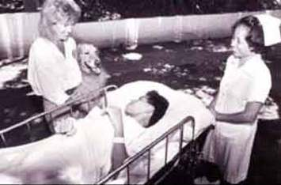
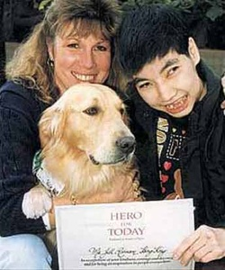

Reposted fromhttp://www.animalasia.org/
Dr Dog is an innovative animal therapy programme that provides people with what they need most - a best friend!
Pioneered by Animals Asia Founder, Jill Robinson, the concept of animal therapy in Asia began with just one dog and a vision to promote animal welfare through people welfare. Dr. Max - a gentle golden giant - was allowed just one hour in the garden of the Duchess of Kent Children's Hospital in 1991....it was a visit that was to mark the start of a positive change in the public's perception of dogs and following in Max's healing paw prints, the Dr. Dog programme has grown quite literally in leaps and bounds!
Over 300 'Canine Consultants', registered as official Animals Asia animal therapy dogs and teams of enthusiastic volunteers make regular visits to hospitals, disabled centres, homes for the young and elderly, orphanages and schools, spreading warmth and unconditional love to people in need in 6 countries across Asia.
Our Dr. Dogs give patients the feeling that they are the most special person in world - a loyal new friend who won't judge them for the way they look or their illness and one who accepts them regardless of class, race, age or disability.
Today Dr. Dog has expanded beyond recognition and has embarked on new educational initiatives to encourage a respect for all life, as well as spreading its unique blend of canine comfort, laughter and friendship to Taiwan, China, Japan, India and the Philippines.
The success of Dr. Dog is not just about the 'feel good factor' - it's scientifically proven to work! As the first program of its kind in Asia, Dr. Dog is proud to have received the Readers Digest "Hero for Today" award.
Animals Asia is sincerely grateful to the International Fund for Animal Welfare (IFAW) for supporting Dr. Dog during the years